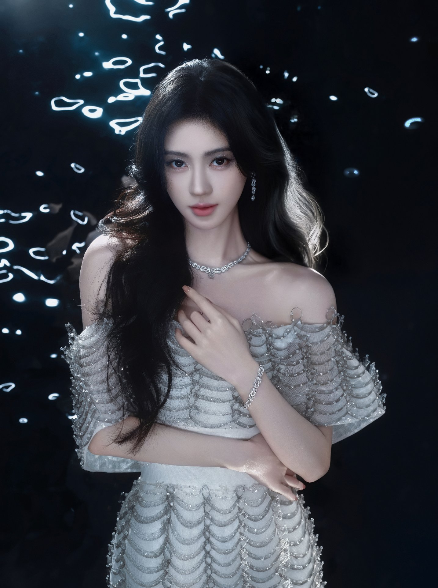
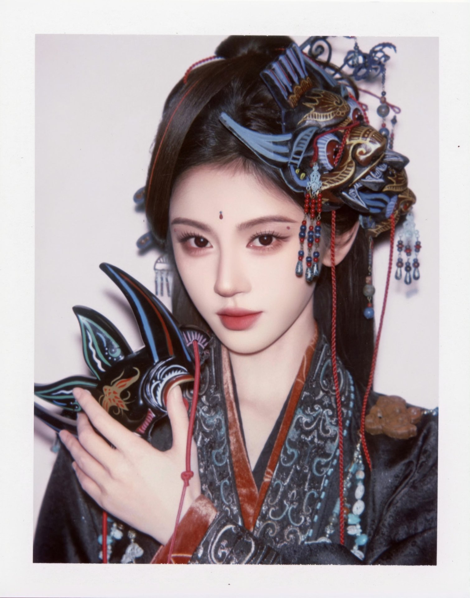

这里收录关于她的音乐、光影与故事。所有内容均为粉丝整理（资料参考百度百科），仅供喜爱与纪念。
1994 年生于四川遂宁，中国内地影视女演员、流行乐歌手；SNH48 二期生，2017 年单飞。
从首张 EP《每一天》到九周年专辑《IX》，留下多张个人音乐作品。
从《芸汐传》《新白娘子传奇》到《花戎》《仙剑四》，角色鲜活。
一群叫「蜜橘」的人，用蓝色守护着同一束光。
鞠婧祎的应援色为蓝色，舞台与应援现场随处可见这片温柔的蓝。
她的粉丝官方称呼为「蜜橘」，如橘子般清甜温暖，一路陪伴她前行。
1994 年 6 月 18 日生于四川遂宁，每年这一天都是蜜橘们的节日。
从首张个人 EP《每一天》到九周年纪念专辑《IX》（担任总监制），她的音乐足迹清晰而坚定。

从《九州·天空城》的雪飞霜，到《仙剑四》的韩菱纱，她在荧屏上留下许多令人难忘的角色。

从出道到如今的关键节点。（资料参考百度百科）
以票选第一从近 4.8 万名参选者中脱颖而出，随《剧场女神》公演出道。
斩获总选举冠军，并主演首部玄幻剧《九州·天空城》。
晋升明星殿堂、连霸总选举冠军，成立个人工作室独立发展。
饰演韩芸汐，成为广受关注的古装剧代表作。
获 QQ 音乐超级巅峰之夜「巅峰流行女歌手」荣誉。
本网站为粉丝自发搭建的非官方纪念与应援站点，与艺人本人及其经纪公司无任何隶属或合作关系，不代表官方立场。站内文字资料整理自公开百科，版权归原作者及权利方所有，仅供非商业性的喜爱与纪念用途，如有侵权请联系下架。禁止将本站内容用于任何商业获利行为。